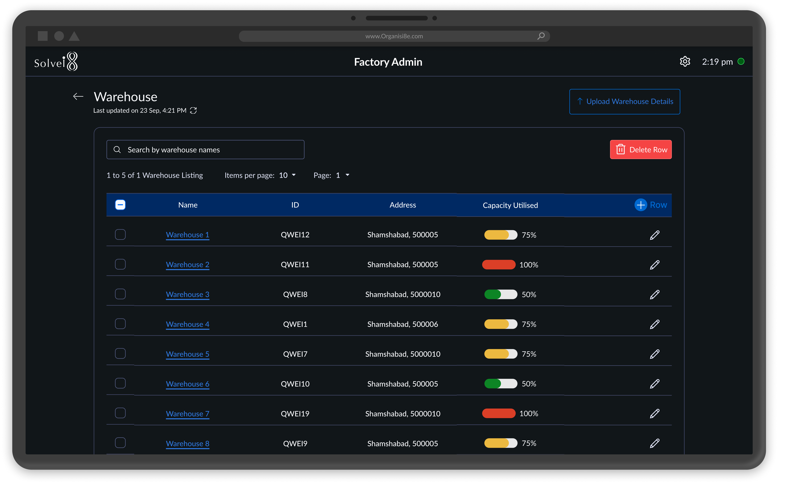
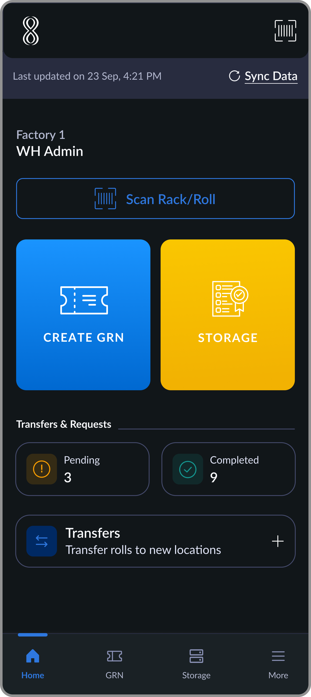
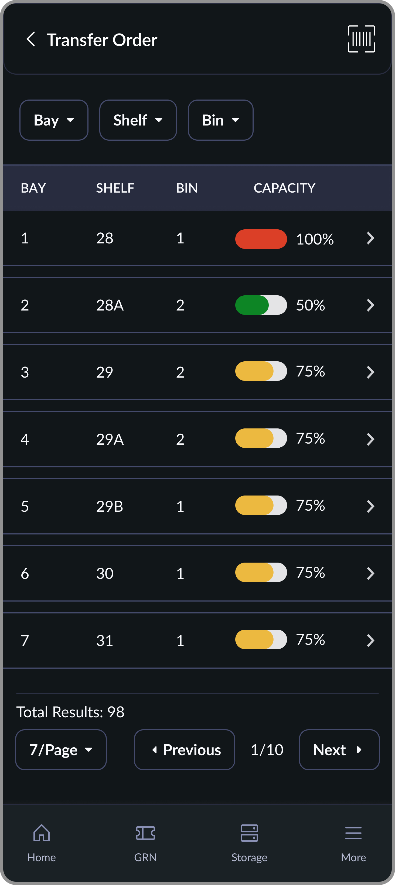
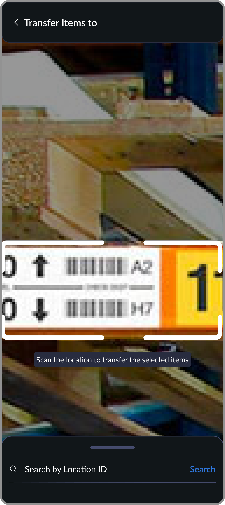
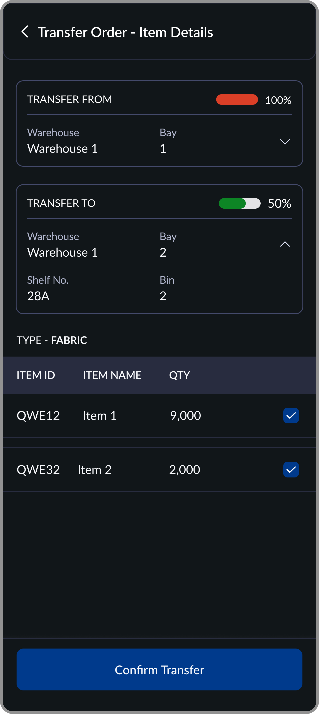
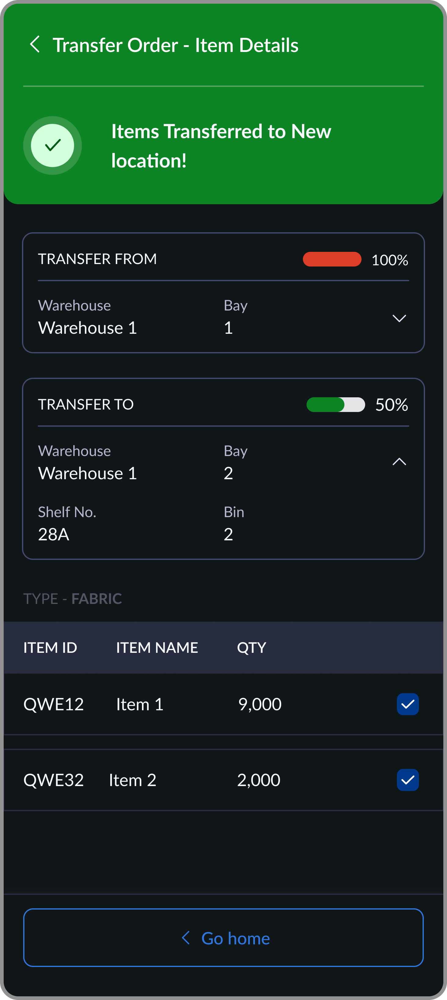

Nobody knew where the fabric was — until production needed it
Warehouse staff were logging fabric locations on paper and coordinating transfers over WhatsApp. Factory admins had no real-time view of capacity. I designed a connected mobile-desktop system that replaced manual coordination with digital traceability — now being deployed across Young One, one of Asia's largest apparel manufacturers with operations across 10+ countries.
30–35
Factories in planned rollout
Young One
First enterprise client — Korea-based, one of Asia's largest apparel manufacturers
0
Paper location logs remaining in onboarded factories
Role
Sole designer — end to end
Platform
Mobile (Android) + Desktop
Type
B2B SaaS — standalone vertical
The Problem
The warehouse ran on paper logs and WhatsApp messages
In apparel manufacturing, fabric and trims are inspected, stored, and moved constantly before they reach production. The accuracy of that movement is critical — a misplaced roll during a deadline order can stall an entire line.
Before this system, there was no structured way to manage any of it. Locations were written on paper registers that went missing or became illegible. Transfers were coordinated through email and WhatsApp with no way to verify they actually happened. Factory admins had no real-time view of what was stored where — they either had to call someone or physically walk the floor.
Paper location records
Storage assignments logged by hand. Incomplete, illegible, and inaccessible to anyone not holding the register.
No transfer verification
Materials moved through email and WhatsApp coordination. No confirmation a transfer happened, or when.
No live capacity view
Factory admins couldn't see which locations were full or available without physically checking. Inbound planning was guesswork.
Disconnected from production
When a production team needed specific fabric, there was no system to tell them where it was. Searching was the only option.
The warehouse operated on manual communication and guesswork — inefficient in any environment, critical in a time-pressured factory.
What I Learned
Four things that shaped the architecture
Insights came through workflow mapping of the paper-based process, operational feedback from warehouse staff and factory admins, and direct client requirements on why existing WMS solutions weren't working. A clear split emerged early between what mobile needed to do and what desktop needed to do — and that split drove every structural decision.
01
Storage has to happen on the floor, not at a desk
After inspection, warehouse staff are standing with physical rolls in hand. Any workflow that required returning to a desktop to log a location would be skipped — or done hours later from memory. The assignment had to happen in the moment, on mobile, while the material was still in hand.
Mobile-first execution for all storage and transfer operations. Desktop reserved for configuration and monitoring.
02
Scanning beats typing, every time
Warehouse floors are active environments. Typing location codes manually under time pressure introduces errors that corrupt the entire location record downstream. But a broken scanner can't mean a broken workflow.
Scanning as the primary method for all location interactions, with manual search as a reliable fallback — so the workflow never breaks due to equipment issues.
03
Capacity had to be calculated, not entered
If factory admins manually entered capacity estimates, the data was always one step behind reality. The only number worth trusting was one derived automatically from actual storage assignments.
Capacity across every Bay → Shelf → Bin location updates in real time from mobile assignments — never from manual input.
04
Transfers needed verification at both ends
A transfer logged at the source but not confirmed at the destination was just as unreliable as a paper log. The physical movement and the digital record had to happen together.
Both source and destination locations scanned or selected to complete every transfer — creating a complete, error-resistant audit trail.
The Design
Three flows, one architecture: mobile execution, desktop oversight
Warehouse staff execute storage and transfers on mobile while physically handling materials. Factory admins configure structure and monitor capacity from desktop. All data syncs in real time. The two surfaces were designed for completely different contexts — but built to stay in sync.
01
Storage Assignment
Mobile
Once fabric or trims pass inspection and a GRN is generated, warehouse staff assign materials to storage locations immediately — while still on the floor with the physical rolls. The flow is: select the GRN, choose rolls, scan the destination location, confirm.
The location's available capacity is shown before roll selection so staff can see at a glance whether a location can take what they're storing. A live counter tracks selected vs. available capacity as rolls are chosen. Once confirmed, warehouse capacity updates instantly across the system.
Scanning was made the primary method, but a broken scanner can't mean a broken workflow. Manual search by location ID was built as a reliable fallback — so assignments could always be completed regardless of equipment conditions on the floor.
02
Warehouse Management
Desktop
Factory admins configure the warehouse structure — Bay → Shelf → Bin hierarchy — either by uploading a bulk Excel file or managing locations individually. The desktop dashboard shows live capacity utilization for every location, automatically calculated from mobile storage assignments. No manual input, no estimates — the number always reflects ground reality.
Admins also generate printable QR code tags for each location directly from the dashboard. These tags are the physical-digital bridge — the codes warehouse staff scan during every storage and transfer operation to keep the system in sync with what's actually on the floor.

Making capacity a calculated value rather than an input field meant the number was always accurate — but it also meant any fabric stored before go-live had to be migrated in during onboarding. That migration was handled as an onboarding step, not built into the product, which added friction to the initial setup process.
03
Location Transfer
Mobile
When fabric or trims need to move between storage locations, warehouse staff execute the transfer on mobile while physically moving the material. They scan or select the source location, choose items to transfer, scan the destination, and confirm. Both locations update their capacity automatically.
The confirmation screen shows source and destination locations, capacity percentages for both, and the selected items — one final check before committing. Items can still be deselected at this stage.





Requiring both source and destination to be scanned or selected added one step to the transfer flow. But it was the only way to create a complete audit trail and prevent the most common transfer error — logging a move that only happened partially.
Outcome
From paper logs to a live warehouse layer — enterprise scale next.
Storage assignments are now logged the moment materials leave inspection. Transfer records are created the moment materials move. Factory admins have real-time capacity across every Bay, Shelf, and Bin without making a single call to the floor.
30–35
Factories in planned rollout across Young One's network
Young One
First enterprise client — Korea-based, one of Asia's largest apparel manufacturers with factories across 10+ countries
0
Paper location logs remaining in onboarded factories
Live
Real-time capacity visibility across all warehouse locations, driven by actual assignments
On enterprise deployment
Young One's rollout is phased by design — one factory goes live first, processes are refined against real operations, and the system scales across their network from there. That was a client requirement, not a product limitation. Enterprise manufacturers at this scale need confidence before committing infrastructure across dozens of facilities. Getting selected as the system they trust to prove that case is the metric that matters most right now.
Looking Back
What I'd do differently
The analytics layer is still missing
The system captures every storage assignment, transfer, and location change. But there's no dashboard that surfaces patterns — which locations are consistently over capacity, which suppliers' materials move most frequently, where bottlenecks form during peak periods. That data exists inside the system. A utilization analytics layer would turn the WMS from a coordination tool into an operational planning tool.
Pre-system migration was harder than expected
Any fabric already in the warehouse before go-live had to be manually entered during onboarding. That process created a period where the digital record and physical reality were partially out of sync. A bulk scan-in flow for existing inventory at onboarding would have made that transition faster and more accurate.
Enterprise scale changes the design brief
Young One came with specific requirements — their warehouse structure, transfer flows, and location hierarchy needed to match existing operational practices exactly. That meant designing to a fixed brief rather than a flexible default. In hindsight, the better approach would have been to establish a strong generic system first — one default flow that works for any factory — and then layer client-specific configurations on top. We're working backwards to that now: extracting the default from what we built for Young One, so future clients get a configurable product rather than a custom one.